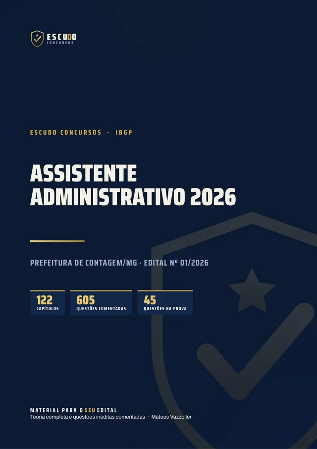
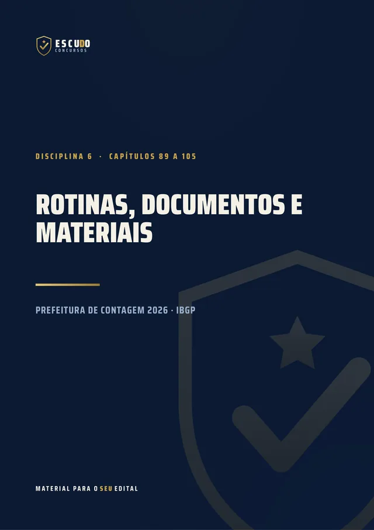
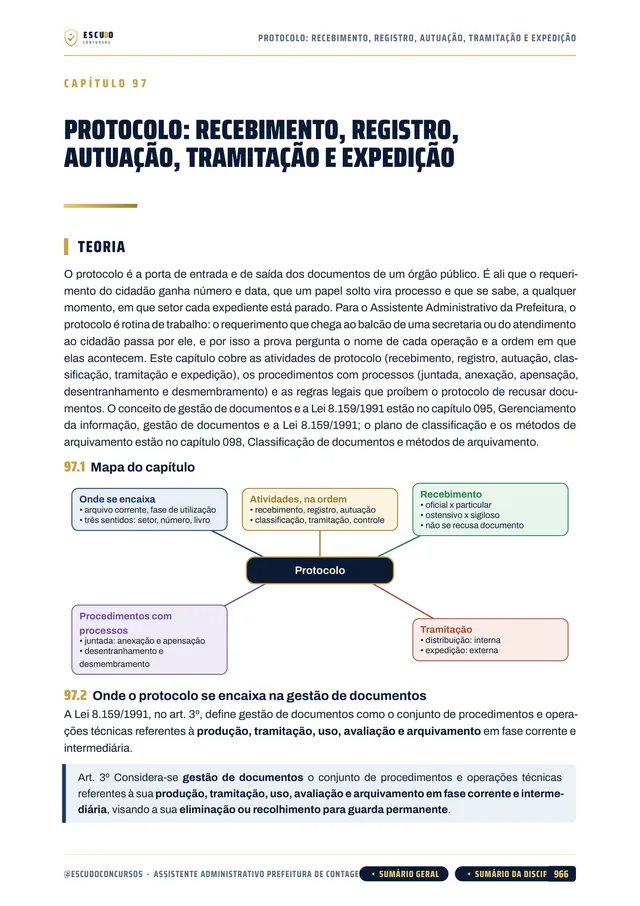
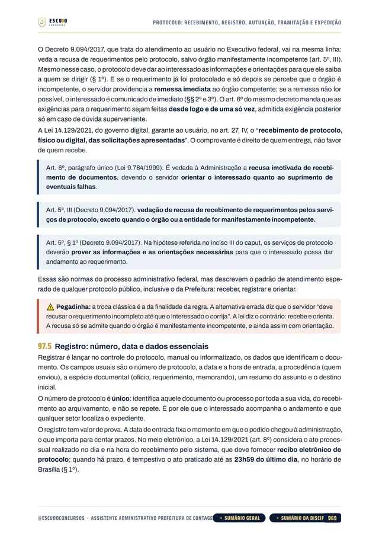
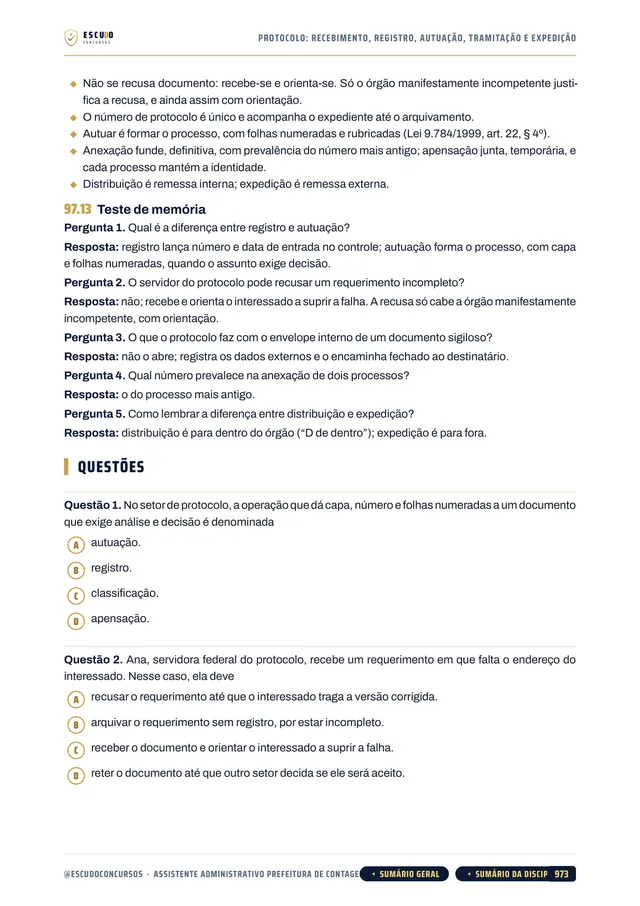
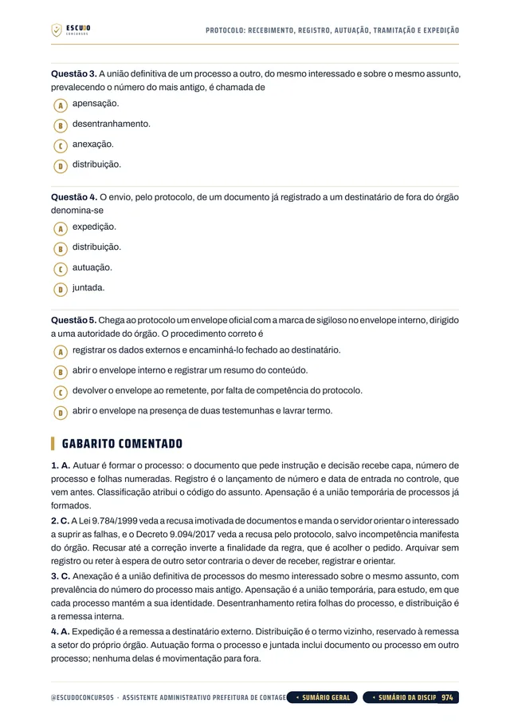

Simulado 1
No meio do caminho
Para medir onde você está e ajustar o estudo enquanto ainda dá tempo.
30 dias após a compra


605questões
comentadas
Prefeitura de Contagem/MG 2026 · Apostila em PDF
São 150 vagas para Assistente Administrativo na Prefeitura de Contagem, e os Conhecimentos Específicos valem 60 dos 100 pontos. O seu material cobre o programa inteiro, já com a Retificação nº 01? Curso feito a partir do Edital nº 01/2026, item por item, com questões de A a D, como na prova, e gabarito comentado.
de R$ 47 por
R$37
com o cupom CONTAGEM37 até 17/11/2026. Pelo botão, o cupom já vai preenchido.
R$47
Curso completo, com acesso imediato.
O concurso
O Concurso Público do Município de Contagem/MG (Edital nº 01/2026, publicado em 14 de agosto de 2026 e consolidado até a Retificação nº 01, de 14 de outubro) abriu 150 vagas para Assistente Administrativo, 88 de ampla concorrência e 62 reservadas, com vencimento de R$ 2.698,73 mais auxílio-alimentação e jornada de 40 horas semanais. O cargo exige Ensino Médio completo. As inscrições vão de 19 de outubro a 17 de novembro de 2026, até as 16h, com taxa de R$ 70,00.
A prova do IBGP é em 24 de janeiro de 2027, domingo, de manhã, das 9h15 às 12h15: só prova objetiva, 45 questões de 4 alternativas, de (A) a (D), com uma só correta, sem redação, títulos ou prova prática para esse cargo.
Aprova quem fizer no mínimo 60 dos 100 pontos, sem zerar nenhum conteúdo. Os 20 Conhecimentos Específicos têm peso 3 e valem 60 pontos, mais da metade da prova. Como nenhum bloco pode zerar, os de 5 questões (Raciocínio Lógico, Noções de Informática e Conhecimentos Gerais do Município) também precisam de preparo.
A Retificação nº 01 revogou a legislação municipal do programa de Conhecimentos Gerais do Município (Lei Orgânica, Estatuto dos Servidores, Plano de Cargos e notícias do site da Prefeitura). O curso segue o edital consolidado.
| Disciplina | Questões | Peso | Pontos |
|---|---|---|---|
| Língua Portuguesa | 10 | 2 | 20 |
| Raciocínio Lógico | 5 | 2 | 10 |
| Noções de Informática | 5 | 1 | 5 |
| Conhecimentos Gerais do Município | 5 | 1 | 5 |
| Conhecimentos Específicos | 20 | 3 | 60 |
| Aprovação com 60 pontos no total (60%) e sem zerar nenhum conteúdo. | 45 | 100 |
O formato
Você estuda lendo, no seu ritmo, pela área de membros da Hotmart ou com os arquivos baixados. O curso foi feito a partir do Edital nº 01/2026, item por item, na ordem do conteúdo programático do Assistente Administrativo, com a legislação vigente em 14/08/2026, a data de publicação do edital, como o próprio edital manda.
Páginas reais do PDF
Toque numa página para ver em tamanho maior.





O que você recebe
Curso em PDF organizado em módulos pelas disciplinas do edital, no padrão visual ESCUDO, para ler no computador, no tablet, no celular ou no app da Hotmart. Não há videoaulas.
122 capítulos cobrindo as cinco disciplinas da prova: Língua Portuguesa (27 capítulos), Raciocínio Lógico (21), Noções de Informática (17), Conhecimentos Gerais do Município (8) e Conhecimentos Específicos (48), mais um capítulo de abertura sobre a prova.
605 questões inéditas com 4 alternativas, de (A) a (D), como na prova, todas com gabarito comentado: por que a correta está correta e onde está o erro de cada uma das outras três.
Conhecimentos Específicos em 48 capítulos, pelo programa do cargo: Administração Pública e Lei 14.133/2021 (licitações e contratos), rotinas administrativas, gestão de documentos e arquivos com o protocolo, administração de materiais com almoxarifado e estoques, atendimento ao cidadão, ética e relações no trabalho, redação oficial, Lei de Acesso à Informação (Lei 12.527/2011) e LGPD (Lei 13.709/2018).
Noções de Informática em 17 capítulos: Windows 10 e 11, Microsoft 365 e Google Workspace, hardware e software, redes e nuvem, banco de dados, segurança da informação e golpes digitais, backup e inteligência artificial.
Conhecimentos Gerais do Município em 8 capítulos: história, geografia, economia e sociedade, cultura e patrimônio, símbolos e cidadania, organização política e atualidades de Contagem, com base no Atlas Escolar Histórico, Geográfico e Cultural de Contagem-MG, o material de estudo oficial indicado pelo IBGP.
Caso prático na rotina de uma Secretaria da Prefeitura de Contagem em cada capítulo de conteúdo.
Teoria com recursos para memorizar: mapa de cada capítulo, fluxogramas, esquemas, quadros de "pegadinha" e "não confunda", questão comentada passo a passo, revisão relâmpago e teste de memória no fim de cada capítulo.
Navegação clicável: do sumário você vai direto ao capítulo, e volta pelo botão do rodapé.
2 simulados inéditos no formato exato da prova (45 questões de A a D, na ordem e na divisão do edital), cada um com caderno de comentários. O Simulado 2 é liberado na semana anterior à prova, para o seu último teste.
Área de membros
| Módulo | Conteúdo | Liberação |
|---|---|---|
| M0 Comece aqui | Apresentação + capítulo 001 (como é a prova e como usar o curso). Bônus: PDF completo para baixar e imprimir | Na compra; o PDF completo no 8º dia |
| M1 Língua Portuguesa | Capítulos 002 a 028 | Na compra |
| M2 Raciocínio Lógico | Capítulos 029 a 049 | Na compra |
| M3 Noções de Informática | Capítulos 050 a 066 | Na compra |
| M4 Conhecimentos Gerais do Município | Capítulos 067 a 074 | Na compra |
| M5 Administração Pública e Licitações | Capítulos 075 a 088 | Na compra |
| M6 Rotinas, documentos e materiais | Capítulos 089 a 105 | Na compra |
| M7 Atendimento, ética, redação oficial e transparência | Capítulos 106 a 122 | Na compra |
| M8 Simulado 1 | 45 questões no formato da prova, caderno de comentários | 30 dias após a compra |
| M9 Simulado 2 | 45 questões no formato da prova, caderno de comentários | 17/01/2027 (7 dias antes da prova) |
Treino no formato da prova
Cada simulado tem 45 questões de A a D, no formato exato da prova, com caderno de comentários.
Simulado 1
Para medir onde você está e ajustar o estudo enquanto ainda dá tempo.
30 dias após a compra
Simulado 2
Liberado na semana anterior à prova de 24/01/2027.
17/01/2027
Para quem é
Para quem vai prestar Assistente Administrativo da Prefeitura de Contagem em 24/01/2027 e quer estudar pelo programa do edital já retificado, com os Conhecimentos Específicos, que valem 60 dos 100 pontos, cobertos por inteiro.
Você tem 7 dias de garantia pela Hotmart. Se não for o que você esperava, pede o reembolso pela própria Hotmart, dentro do prazo.
Sem surpresa na área de membros
Na compra: todas as disciplinas em PDF, uma por módulo, com a teoria e as questões comentadas. É o curso inteiro, para começar a estudar no mesmo dia.
8 dias após a compra: o PDF completo para imprimir. É o mesmo conteúdo dos módulos num arquivo só, liberado depois da garantia de 7 dias.
Simulado 1: 30 dias após a compra, para medir onde você está no meio da preparação.
Simulado 2: em 17/01/2027, 7 dias antes da prova, para o último teste.
O PDF completo e os simulados aparecem bloqueados na área de membros até a data de cada um: não é conteúdo faltando, é a liberação programada.
Dúvidas
Não. É um curso 100% em PDF: teoria, questões comentadas e simulados para ler e resolver.
O acesso é imediato depois da confirmação do pagamento, pela área de membros da Hotmart (web ou app). O PDF completo para baixar e imprimir é liberado no 8º dia.
O Simulado 1 é liberado 30 dias após a compra. O Simulado 2 é liberado em 17/01/2027, uma semana antes da prova.
Não como curso completo: os 20 Conhecimentos Específicos, que valem 60 pontos, seguem só o programa do Assistente Administrativo. Confira no edital o programa do seu cargo.
Só prova objetiva, no domingo de manhã, com 3 horas: 45 questões de múltipla escolha com quatro alternativas, de (A) a (D), e uma só correta. Os pesos variam: Português e Raciocínio Lógico valem 2, Informática e Conhecimentos Gerais do Município valem 1 e os Conhecimentos Específicos valem 3. Não há redação, títulos nem prova prática para Assistente Administrativo. As questões do curso seguem esse formato.
No mínimo 60 dos 100 pontos, sem zerar nenhum conteúdo. Por isso os blocos de 5 questões também precisam de estudo.
Sim, nos Conhecimentos Gerais do Município: a legislação municipal e as notícias do site da Prefeitura saíram do programa. O curso segue o edital consolidado e não estuda o que foi revogado.
Não. As 605 questões de treino e as dos simulados são inéditas, escritas no formato do edital a partir do conteúdo programático do Assistente Administrativo.
Ensino Médio completo, conforme o edital.
Você tem 7 dias de garantia pela Hotmart. Se não for o que você esperava, pede o reembolso.
Prefeitura de Contagem/MG 2026 · Assistente Administrativo
de R$ 47 por
R$37
com o cupom CONTAGEM37 até 17/11/2026.
R$47
Curso completo, com acesso imediato.
Material para o SEU edital. ESCUDO Concursos.